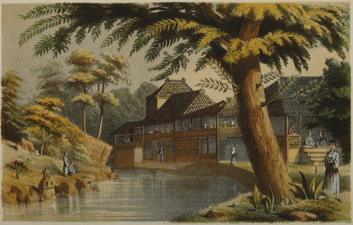
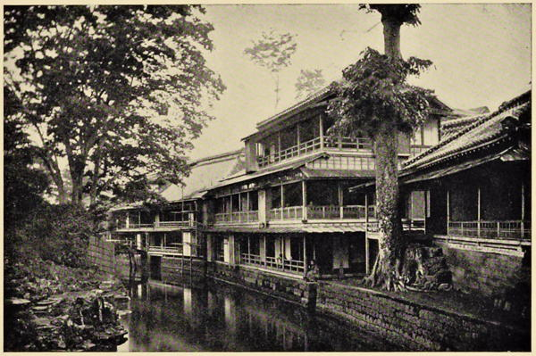

“Tea gardens near Yedo”
Narrative of the Earl of Elgin’s Mission to China (1859)

“Oji tea house, Tokyo”
Japan: Described and Illustrated by the Japanese (1897)
After a visit to the arena or theatre the Japanese like to go to the tea-houses. There is scarcely any other institution in the charming “Land of the Rising Sun” which leaves such an agreeable recollection on the mind of the visitor as these pretty neat tea-houses, which there take the place of our restaurants. There is an unusual charm connected with many of them. They are found of fashionable, elegant style as well as of moderate and quite common forms. An elderly married woman is generally the landlady and attends to the kitchen, while a number of young girls, aged ten to eighteen, serve the guests. Besides such usual refreshments as tea, saké, cakes, and fruit, more substantial meals are also served in the tea-houses, and many Japanese make it a custom to give their dinner parties there. On such occasions dancing and singing girls are never missing. They are not inmates of the tea-house, but are sent for and engaged for the time. They are small, dainty, nice-looking girls, especially the geishas or maikos (dancing girls), and vary in age from twelve to sixteen; some of them are quite celebrated in the district for their beauty and grace, and their taste in dress.
Japan As I Saw It (1912)
After riding about two miles [from Kawasaki] we arrived at a place called Omora, where there is a celebrated tea-house named Mae-yaski, which being interpreted means the “Mansion of Plum-trees.” Here we were met by mine host and some pretty damsels, and invited to partake of the usual refreshment. The “Mansion of Plum-trees” is one of the best of the class to which it belongs. It is arranged in the usual style,—that is, it has a number of apartments separated from each other by sliding doors, and raised floors covered with mats kept scrupulously clean, upon which the natives sit down to eat their meals and drink tea or saki. In front of the door there is a matted platform, raised about a foot from the ground and covered overhead. Ladies travelling in norimons or kangos, when about to stop at the tea-house, are brought alongside of this platform, the bearers give the conveyance a tilt on one side, and the fair ones are literally emptied out upon the stage. They seem quite accustomed to this treatment, and immediately gather themselves up in the most coquettish way possible, and assume the squatting posture common in Japan.
Whether we really needed refreshment, or whether we could not resist the laughing-faced damsels above mentioned, is not of much moment to the general reader; one thing is certain, that somehow or other we found ourselves within the “Mansion of Plum-trees,” surrounded by pretty, good humoured girls, and sipping a cup of fragrant tea. One lady, not particularly young, and whom I took for the hostess, had adorned herself by pulling out her eyebrows and blackening her teeth, which certainly in my opinion did not improve her appearance. However, there is no accounting for taste; and certainly our own taste, in many respects, is not so pure as to warrant us in “throwing the first stone” at the Japanese. The young girls who were in attendance upon me had glittering white teeth, and their lips stained with a dark crimson dye. The Japanese innkeeper always secures the prettiest girls for his waiting-maids, reminding me in this respect of our own publicans and their bar-maids. ...
In addition to tea, my fair waiting-maids brought a tray containing cakes, sweetmeats of various kinds, and a number of hard-boiled eggs, which one of them kept cracking and peeling, and pressing upon me. As I was seated in the midst of my good-humoured entertainers, the scene must have been highly amusing to a looker-on, and would, I doubt not, have made a capital photograph.
Yedo and Peking (1863)
In a Japanese inn a bill is duly brought; but the visitor must invariably add a little extra to the amount, which is called “Cha dai.” At a wayside tea-house, on the contrary, no bill ever appears; but the customer deposits what he considers a suitable sum in the corner of the tea-tray.
Japan As We Saw It (Bickersteth) (1893)
◀ ShoppingInns ▶